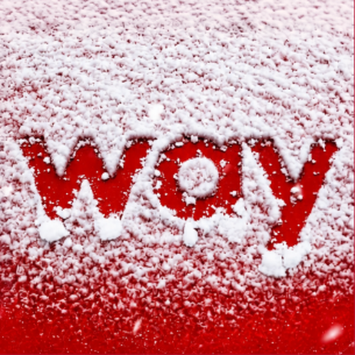

Way · Holiday Edition
Install the Christmas edition to your home screen, then open it from the icon.
- Tap the Share button in Safari
- Choose Add to Home Screen
- Tap Add, then open Way from your home screen
- Open Chrome's ⋮ menu
- Tap Add to Home screen → Install
- Open Way from your home screen
Preview the app flow here: run splash → home